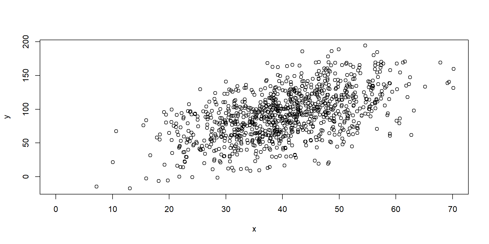
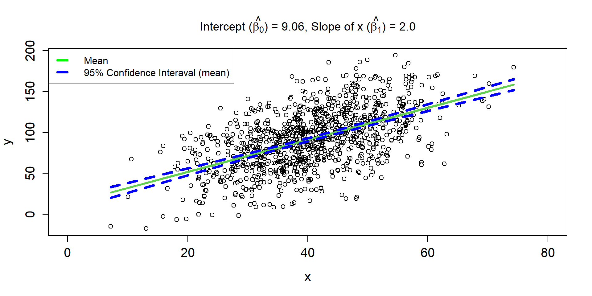
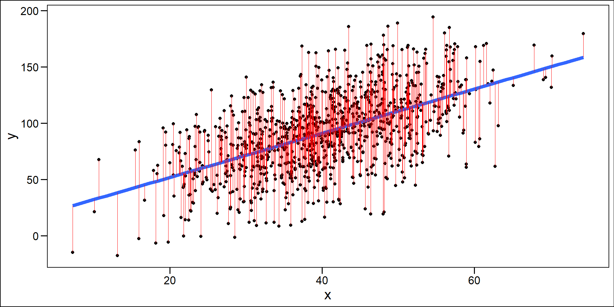
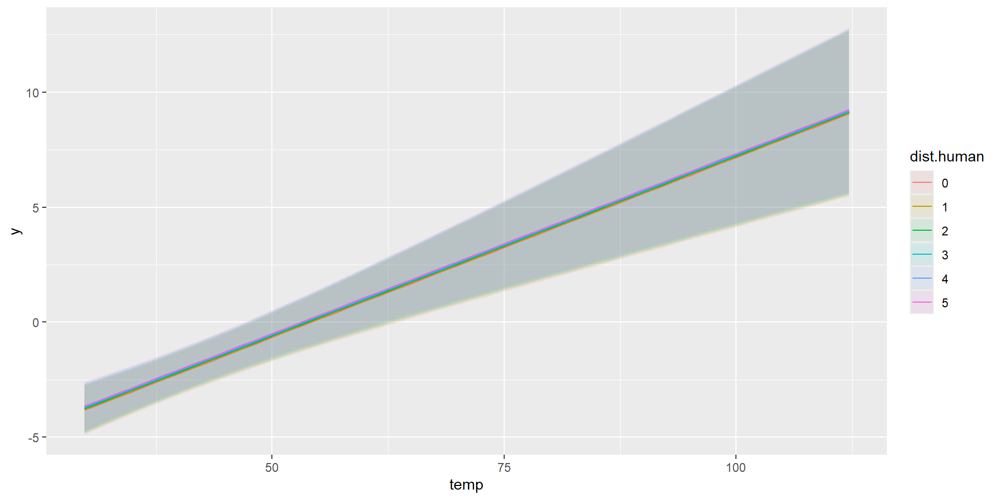
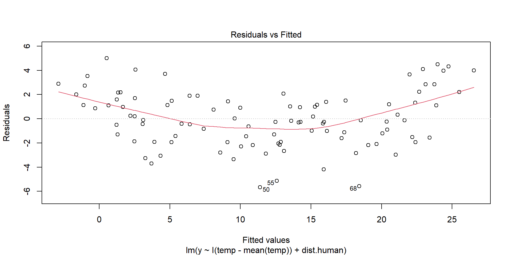

Linear Regression
Objectives
- fundamentals
- assumptions
- lm / glm functions
- confidence intervals
- case study
Why model data?
In ecology, we use models to,
- describe relationships among outcomes and processes
- to estimate hidden (latent) processes
- predict unobserved values
- forecast future outcomes, such as responses to management
Linear Regression (motivation)
Linear Regression (Equation)

Linear Regression (Equation 2)
\[ y_{i} \sim \text{Normal}(\mu_{i}, \sigma)\\ \mu_{i} = \beta_0 + \beta_1 \times x_i \\ \]
Linear Regression Line 1
\[ \hat{\mu_{i}} = 9.06 + 2\times x_i \]

Linear Regression Line 2
\[ \hat{\mu_{i}} = 9.06 + 2\times x_i \]
Linear Regression Line 3
\[ \hat{\mu_{i}} = 9.06 + 2\times x_i \]

Residuals
One Sample
\[ \begin{align*} y_{i} \sim& \text{Normal}(\mu_{i},\sigma) \\ \mu_{i} =& \beta_{0} + \beta_{1}x_{i}\\ \mu_{i} =& 1 + 0.5 \times x_{i} \end{align*} \]

Sampling Distributions of y
\[ \begin{align*} \mu_{i} = 1 + 0.5 \times x_{i} \end{align*} \]
Sampling Distributions of \(\hat{\mu}\)
\[ \begin{align*} \mu_{i} = 1 + 0.5 \times x_{i} \end{align*} \]
Assumptions
Independence of the errors
Correlation(\(\epsilon_{i}\),\(\epsilon_{j}\)) = 0, \(\forall\) pairs of \(i\) and \(j\)
This means that knowing how far observation \(i\) will be from the true regression line tells us nothing about how far observation \(j\) will be from the regression line.
Assumptions
Homogeniety of the variance
var(\(\epsilon_{i}\)) = \(\sigma^2\)
Constancy in the scatter of observations above and below the line, going left to right.
Assumptions
Heteroskedasticity

Assumptions
Linearity
\[
E[y_i|x_i] = \mu_i = \beta_0 + \beta_1 \times x_i \\
\]
The hypothesis about the variables included in the model (e.g., \(x_i\)) characterizes the mean well.
Assumptions
Normality
\[
\epsilon_i \sim \text{Normal}(0,\sigma)
\]
Each \(i^{th}\) residual
- comes from a Normal distribution with a mean of zero
- is symmetrically disributed around zero
- varies around zero by \(\sigma\), which is the same for each residual.
Assumption Violations
Robustness
Linearity and constant variance are often more important than the assumption of normality (see e.g., Knief & Forstmeier, 2021 and references therein)
This is especially true for large sample sizes
Intercept-Only Model
\[ y_{i} \sim \text{Normal}(\mu_{i}, \sigma^2)\\ \mu_{i} = \beta_0 \]
Visualize Intercept-Only Model

Fit Intercept-Only Model
# Fit model/hypothesis using maximum likelihood
model1.0 = lm(y~1)
model1.1 = glm(y~1)
model1.2 = glm(y~1, family=gaussian(link = identity))
# Compare Results
data.frame(intercept=c(model1.0$coefficients,model1.1$coefficients, model1.2$coefficients),
SE = c(summary(model1.0)$coefficients[, 2], summary(model1.1)$coefficients[, 2],summary(model1.2)$coefficients[, 2])
) intercept SE
1 9.913821 0.1765343
2 9.913821 0.1765343
3 9.913821 0.1765343Fit Intercept-Only Model
Call:
lm(formula = y ~ 1)
Residuals:
Min 1Q Median 3Q Max
-3.7815 -1.2733 -0.0581 1.1558 4.4979
Coefficients:
Estimate Std. Error t value Pr(>|t|)
(Intercept) 9.9138 0.1765 56.16 <2e-16 ***
---
Signif. codes: 0 '***' 0.001 '**' 0.01 '*' 0.05 '.' 0.1 ' ' 1
Residual standard error: 1.765 on 99 degrees of freedomFitted-values
$fit
1 2 3 4 5 6 7 8
9.913821 9.913821 9.913821 9.913821 9.913821 9.913821 9.913821 9.913821
9 10 11 12 13 14 15 16
9.913821 9.913821 9.913821 9.913821 9.913821 9.913821 9.913821 9.913821
17 18 19 20 21 22 23 24
9.913821 9.913821 9.913821 9.913821 9.913821 9.913821 9.913821 9.913821
25 26 27 28 29 30 31 32
9.913821 9.913821 9.913821 9.913821 9.913821 9.913821 9.913821 9.913821
33 34 35 36 37 38 39 40
9.913821 9.913821 9.913821 9.913821 9.913821 9.913821 9.913821 9.913821
41 42 43 44 45 46 47 48
9.913821 9.913821 9.913821 9.913821 9.913821 9.913821 9.913821 9.913821
49 50 51 52 53 54 55 56
9.913821 9.913821 9.913821 9.913821 9.913821 9.913821 9.913821 9.913821
57 58 59 60 61 62 63 64
9.913821 9.913821 9.913821 9.913821 9.913821 9.913821 9.913821 9.913821
65 66 67 68 69 70 71 72
9.913821 9.913821 9.913821 9.913821 9.913821 9.913821 9.913821 9.913821
73 74 75 76 77 78 79 80
9.913821 9.913821 9.913821 9.913821 9.913821 9.913821 9.913821 9.913821
81 82 83 84 85 86 87 88
9.913821 9.913821 9.913821 9.913821 9.913821 9.913821 9.913821 9.913821
89 90 91 92 93 94 95 96
9.913821 9.913821 9.913821 9.913821 9.913821 9.913821 9.913821 9.913821
97 98 99 100
9.913821 9.913821 9.913821 9.913821
$se.fit
[1] 0.1765343 0.1765343 0.1765343 0.1765343 0.1765343 0.1765343 0.1765343
[8] 0.1765343 0.1765343 0.1765343 0.1765343 0.1765343 0.1765343 0.1765343
[15] 0.1765343 0.1765343 0.1765343 0.1765343 0.1765343 0.1765343 0.1765343
[22] 0.1765343 0.1765343 0.1765343 0.1765343 0.1765343 0.1765343 0.1765343
[29] 0.1765343 0.1765343 0.1765343 0.1765343 0.1765343 0.1765343 0.1765343
[36] 0.1765343 0.1765343 0.1765343 0.1765343 0.1765343 0.1765343 0.1765343
[43] 0.1765343 0.1765343 0.1765343 0.1765343 0.1765343 0.1765343 0.1765343
[50] 0.1765343 0.1765343 0.1765343 0.1765343 0.1765343 0.1765343 0.1765343
[57] 0.1765343 0.1765343 0.1765343 0.1765343 0.1765343 0.1765343 0.1765343
[64] 0.1765343 0.1765343 0.1765343 0.1765343 0.1765343 0.1765343 0.1765343
[71] 0.1765343 0.1765343 0.1765343 0.1765343 0.1765343 0.1765343 0.1765343
[78] 0.1765343 0.1765343 0.1765343 0.1765343 0.1765343 0.1765343 0.1765343
[85] 0.1765343 0.1765343 0.1765343 0.1765343 0.1765343 0.1765343 0.1765343
[92] 0.1765343 0.1765343 0.1765343 0.1765343 0.1765343 0.1765343 0.1765343
[99] 0.1765343 0.1765343
$df
[1] 99
$residual.scale
[1] 1.765343What is a CI?
“A confidence interval for a parameter is an interval computed using sample data …
“… by a method that will contain the parameter for a specified proportion of all samples.
The success rate (proportion of all samples whose intervals contain the parameter) is known as the confidence level.” R. H. Lock et al. (2020)
What is a CI?
Key
- the parameter we are trying to estimate is a fixed unknown (i.e., it is not varying across samples)
- the endpoints of our confidence interval are random and will change every time we collect a new data set (the endpoints themselves actually have a sampling distribution!)
What is a CI?

Confidence Intervals
Normal Approximation
Bootstrapping
Instead of relying on the 95% intervals from an assumed normal distribution, we will create a distribution by resampling our data.
See, Stats4Ecologists
Bootstrapping (idea)

Bootstrapping (idea)

Bootstrapping (idea)

Bootstrapping (code)
# Setup
nboot <- 1000 # number of bootstrap samples
nobs <- length(y)
bootcoefs <- rep(NA, nboot)
# Start loop
for(i in 1:nboot){
set.seed(43243+i)
# Create bootstrap data set by sampling original observations w/ replacement
bootdat <- y[sample(1:nobs, nobs, replace=TRUE)]
# Calculate bootstrap statistic
glmboot <- glm(bootdat ~ 1)
bootcoefs[i] <- coef(glmboot)
}Bootstrapping (code)
Bootstrapping (code)
Comparison
Independent Variables
Prairie Dog Calling

y = # of calls per 5 minute at a prairie dog colony
temp = temperature, degrees F
dist.human = distance of nearest human activity to colony
Exploratory
Model Fitting 1
Call:
lm(formula = y ~ temp + dist.human, data = dat)
Residuals:
Min 1Q Median 3Q Max
-5.6714 -1.6690 -0.1506 1.4910 5.0041
Coefficients:
Estimate Std. Error t value Pr(>|t|)
(Intercept) -8.312197 1.074281 -7.737 9.65e-12 ***
temp 0.156393 0.024605 6.356 6.75e-09 ***
dist.human 0.036010 0.003388 10.629 < 2e-16 ***
---
Signif. codes: 0 '***' 0.001 '**' 0.01 '*' 0.05 '.' 0.1 ' ' 1
Residual standard error: 2.338 on 97 degrees of freedom
Multiple R-squared: 0.9233, Adjusted R-squared: 0.9217
F-statistic: 583.8 on 2 and 97 DF, p-value: < 2.2e-16Model Notation 1
Model Fitting 2
Mean-center the intercept. Slopes do not change.
Call:
lm(formula = y ~ I(temp - mean(temp)) + dist.human, data = dat)
Residuals:
Min 1Q Median 3Q Max
-5.6714 -1.6690 -0.1506 1.4910 5.0041
Coefficients:
Estimate Std. Error t value Pr(>|t|)
(Intercept) 2.614311 0.895284 2.920 0.00435 **
I(temp - mean(temp)) 0.156393 0.024605 6.356 6.75e-09 ***
dist.human 0.036010 0.003388 10.629 < 2e-16 ***
---
Signif. codes: 0 '***' 0.001 '**' 0.01 '*' 0.05 '.' 0.1 ' ' 1
Residual standard error: 2.338 on 97 degrees of freedom
Multiple R-squared: 0.9233, Adjusted R-squared: 0.9217
F-statistic: 583.8 on 2 and 97 DF, p-value: < 2.2e-16Normalizing x
Mean-center and standardize by std. deviation
Comparison

Model Fitting 3
What does the slope mean now?
\[ \mu_{i} = \beta_0 + \beta_1 \times 1 + \beta_2 \times 0 \]
Call:
lm(formula = y ~ temp.sc + dist.sc, data = dat)
Residuals:
Min 1Q Median 3Q Max
-5.6714 -1.6690 -0.1506 1.4910 5.0041
Coefficients:
Estimate Std. Error t value Pr(>|t|)
(Intercept) 11.8002 0.2338 50.471 < 2e-16 ***
temp.sc 3.0958 0.4871 6.356 6.75e-09 ***
dist.sc 5.1771 0.4871 10.629 < 2e-16 ***
---
Signif. codes: 0 '***' 0.001 '**' 0.01 '*' 0.05 '.' 0.1 ' ' 1
Residual standard error: 2.338 on 97 degrees of freedom
Multiple R-squared: 0.9233, Adjusted R-squared: 0.9217
F-statistic: 583.8 on 2 and 97 DF, p-value: < 2.2e-16Marginal Predictions
\[ \hat{\mu_{i}} = \hat{\beta_{0}} + \hat{\beta_{1}}\times 0 + \hat{\beta_{2}} \times \text{dist.human}_i \]
Add data points
Combined Predictions
Combined Predictions
Taking Control
Combined Predictions 2
Evaluating Assumptions
Largely done based on the residuals
\(y_{i} - \hat{y}_{i}\)
Linearity Assumption
Ideally, there will be no pattern and the red line should be roughly horizontal near zero.
Homogeneity of Variance
Residuals should be spread equally along the ranges of predictors. We want a horizontal red line; otherwise, suggests a non-constant variances in the residuals (i.e., heteroscedasticity).
Normality of Residuals
Shows theoretical quantiles versus empirical quantiles of the residuals. We want to see cicles on the dotted line.
Outliers
Outlier: extreme value that can affect the \(\beta\) estimate. Leverage plot: points in the upper right and lower right corner.
Exploring Assumptions
Nicer looking Plots